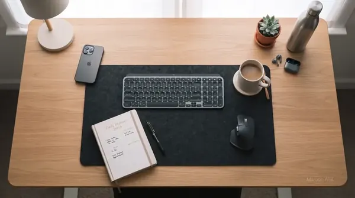
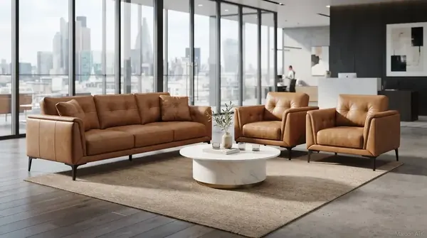

Pendahuluan: Mengapa Tata Ruang Kantor Mempengaruhi Produktivitas?
Pernahkah Anda merasa lelah, pegal, atau tidak fokus setelah seharian bekerja di kantor? Bisa jadi, penyebabnya bukan karena pekerjaan yang berat, melainkan penataan furniture kantor yang kurang tepat. Studi menunjukkan bahwa lingkungan kerja yang ergonomis dan tertata dengan baik dapat meningkatkan produktivitas staf hingga 30% dan mengurangi tingkat absensi akibat masalah kesehatan.
Di Indonesia, kesadaran akan pentingnya furniture kantor ergonomis semakin meningkat. Namun, banyak perusahaan masih belum mengetahui cara menata ruang kerja yang optimal. Artikel ini akan memberikan 7 tips praktis menata furniture kantor agar staf Anda lebih produktif, nyaman, dan sehat—mulai dari penataan meja, kursi, lemari, hingga area rapat dan ruang tunggu.

Tips Memilih Kursi Ergonomis untuk Kesehatan Staf
Panduan memilih kursi kantor yang mendukung postur tubuh dan produktivitas kerja.
Tips #1: Pilih Kursi Ergonomis dengan Penyangga Punggung yang Baik
Kursi adalah investasi utama dalam kenyamanan staf. Kursi yang tidak ergonomis dapat menyebabkan sakit punggung, leher kaku, dan kelelahan. Pastikan kursi kantor Anda memiliki:
- Penyangga punggung (lumbar support) – mendukung lekukan alami tulang belakang.
- Ketinggian dapat diatur – sehingga kaki dapat menapak rata di lantai dengan paha sejajar.
- Sandaran tangan yang nyaman – mengurangi beban pada bahu dan leher.
- Roda yang halus – memudahkan pergerakan tanpa mengganggu konsentrasi.
GEO: Di Indonesia, banyak pekerja menghabiskan 8-10 jam sehari di kursi. Memilih kursi yang tepat adalah langkah awal untuk menciptakan lingkungan kerja yang sehat dan produktif.

Meja Kerja Staf Minimalis M-120 – Solusi Ruang Kerja Efisien
Meja kerja dengan desain minimalis yang mendukung produktivitas staf di ruang terbatas.
Tips #2: Atur Ketinggian Meja dan Posisi Monitor dengan Tepat
Kombinasi meja dan monitor yang salah adalah penyebab utama sindrom leher tegang (text neck) dan mata lelah. Berikut panduan praktisnya:
- Ketinggian meja – saat duduk, siku Anda harus membentuk sudut 90 derajat dengan lengan sejajar lantai.
- Posisi monitor – bagian atas layar sejajar dengan mata, sehingga Anda tidak perlu menunduk atau mendongak.
- Jarak mata ke monitor – sekitar 50-70 cm untuk mengurangi ketegangan mata.
- Gunakan keyboard tray – untuk menjaga pergelangan tangan tetap lurus saat mengetik.
Meja Berdiri (Standing Desk) untuk Variasi Postur
Meja berdiri atau standing desk semakin populer di Indonesia sebagai solusi untuk mengurangi efek buruk duduk terlalu lama. Dengan meja yang dapat diatur ketinggiannya, staf bisa bergantian posisi duduk dan berdiri sepanjang hari. Ini membantu melancarkan sirkulasi darah dan mengurangi kelelahan.

Meja kerja dengan monitor pada ketinggian mata dan keyboard tray untuk posisi mengetik yang ideal.
Tips #3: Zonasi Ruang Kerja untuk Efisiensi dan Fokus
Salah satu kesalahan terbesar dalam penataan furniture kantor adalah tidak adanya zonasi yang jelas. Ruang kerja yang kacau dapat mengganggu konsentrasi. Terapkan zonasi berikut:
- Zona utama – meja kerja dengan monitor, keyboard, dan perlengkapan utama.
- Zona pendukung – lemari arsip, rak buku, atau filing cabinet di dekat meja.
- Zona kolaborasi – area khusus untuk diskusi tim, misalnya meja bundar atau sofa.
- Zona istirahat – ruang santai dengan sofa dan meja kopi untuk relaksasi.
Dengan zonasi yang baik, staf dapat fokus pada pekerjaan tanpa gangguan dan memiliki ruang untuk berinteraksi dengan rekan tim.

Lemari Arsip Besi dengan Pintu Geser – Solusi Penyimpanan Rapi
Lemari arsip yang efisien untuk menyimpan dokumen penting tanpa memakan banyak ruang.
Tips #4: Optimalkan Pencahayaan dan Sirkulasi Udara
Faktor yang sering diabaikan adalah pencahayaan dan sirkulasi udara. Keduanya sangat mempengaruhi kenyamanan dan produktivitas:
- Cahaya alami – letakkan meja kerja dekat jendela untuk mendapatkan sinar matahari pagi yang baik.
- Lampu meja – gunakan lampu dengan cahaya putih (5000-6500K) untuk mengurangi silau dan kelelahan mata.
- Ventilasi udara – pastikan aliran udara lancar, gunakan tanaman hias untuk menyegarkan ruangan.
- Suhu ruangan – pertahankan suhu 22-25°C agar staf tetap nyaman.
GEO: Di daerah tropis seperti Indonesia, sirkulasi udara yang baik sangat penting. AC yang terlalu dingin atau ruangan yang pengap dapat menurunkan produktivitas secara signifikan.

Area ruang tunggu yang nyaman dengan sofa modern menciptakan kesan profesional dan ramah bagi tamu.
Tips #5: Pilih Material Furniture yang Tahan Lama dan Mudah Perawatan
Material furniture menentukan ketahanan dan kemudahan perawatan. Di Indonesia dengan cuaca tropis, pilih material yang tidak mudah rusak terkena kelembapan:
- Kayu solid atau HPL – untuk meja dan lemari, tahan terhadap goresan dan kelembapan.
- Kulit sintetis (Oscart/PU) – untuk kursi dan sofa, mudah dibersihkan dan tahan lama.
- Besi powder coating – untuk rangka kursi dan lemari, anti karat dan kuat.
- Mesh fabric – untuk kursi ergonomis, memberikan sirkulasi udara yang baik.
Butuh Konsultasi Penataan Furniture Kantor?
Tim MAROON ATK siap membantu Anda merancang tata letak ruang kerja yang ergonomis dan produktif di seluruh Indonesia.
Tips #6: Tata Lemari dan Rak dengan Prinsip "Mudah Diakses"
Lemari dan rak yang penuh sesak serta barang yang sulit dijangkau dapat menghambat produktivitas. Terapkan prinsip "mudah diakses":
- Letakkan barang sering pakai di depan – di rak atau laci yang mudah dijangkau.
- Gunakan label – untuk memudahkan identifikasi dokumen dan perlengkapan.
- Kategorikan berdasarkan frekuensi penggunaan – barang yang jarang dipakai simpan di tempat lebih tinggi atau di belakang.
- Rutin bersihkan dan sortir – minimal sebulan sekali untuk menghindari penumpukan barang tidak berguna.
Tips #7: Ciptakan Ruang Kolaborasi yang Nyaman
Ruang kolaborasi seperti meeting room dan ruang diskusi harus dirancang untuk mendukung interaksi tim. Elemen pentingnya:
- Meja konferensi yang cukup luas – untuk menampung semua peserta rapat.
- Kursi yang nyaman – dengan roda dan sandaran yang dapat disesuaikan.
- Tekn pendukung – seperti Interactive Flat Panel atau smart board untuk presentasi interaktif.
- Akses mudah ke stop kontak dan Wi-Fi – untuk kebutuhan perangkat elektronik.
Ruang kolaborasi yang baik akan mendorong komunikasi tim yang lebih efektif dan kreativitas yang lebih tinggi.

Ruang rapat modern dengan Interactive Flat Panel 65" untuk presentasi dan kolaborasi tim yang lebih efektif.
Kesimpulan: Investasi Furniture Ergonomis = Investasi Produktivitas
Poin Penting untuk Diingat
- Kursi ergonomis adalah prioritas utama untuk mencegah masalah postur dan kelelahan.
- Ketinggian meja dan monitor harus sesuai dengan postur tubuh staf.
- Zonasi ruang membantu meningkatkan fokus dan efisiensi kerja.
- Pencahayaan dan sirkulasi yang baik menunjang kenyamanan jangka panjang.
- Material furniture harus disesuaikan dengan kondisi iklim di Indonesia.
- Ruang kolaborasi yang nyaman mendorong komunikasi dan kreativitas tim.
- MAROON ATK siap menjadi mitra Anda dalam menyediakan furniture kantor berkualitas dan konsultasi penataan ruang kerja.
Pertanyaan Umum (FAQ) Seputar Penataan Furniture Kantor
Prinsip ergonomi meliputi ketinggian meja dan kursi yang sesuai (paha sejajar lantai, siku 90 derajat), posisi monitor setinggi mata, kursi dengan penyangga punggung yang baik, dan area kerja yang mudah dijangkau tanpa membungkuk atau menjangkau berlebihan.
Atur meja kerja dengan zona-zona fungsional: zona utama untuk monitor dan keyboard, zona samping untuk dokumen aktif, dan zona penyimpanan untuk perlengkapan. Pastikan kabel tertata rapi, dan gunakan lampu meja yang cukup untuk mengurangi silau.
Kesalahan umum antara lain: kursi tidak ergonomis, monitor terlalu rendah/tinggi, kurangnya sirkulasi udara, pencahayaan buruk, dan penempatan lemari yang menghalangi akses atau sirkulasi. Hindari juga meja yang terlalu penuh dan ruang yang sempit.
Ya, MAROON ATK menyediakan layanan konsultasi penataan furniture kantor secara gratis. Tim kami dapat membantu merancang tata letak ruang kerja yang ergonomis dan produktif sesuai dengan kebutuhan dan anggaran Anda.

Arby Ardiansyah
Praktisi di bidang pengadaan dan penataan furniture kantor dengan pengalaman lebih dari 5 tahun di Indonesia. Berpengalaman membantu berbagai instansi pemerintah, kampus, dan perusahaan swasta dalam menciptakan ruang kerja yang ergonomis, nyaman, dan produktif. Berkomitmen memberikan solusi furniture terbaik dengan pendekatan profesional dan personal.